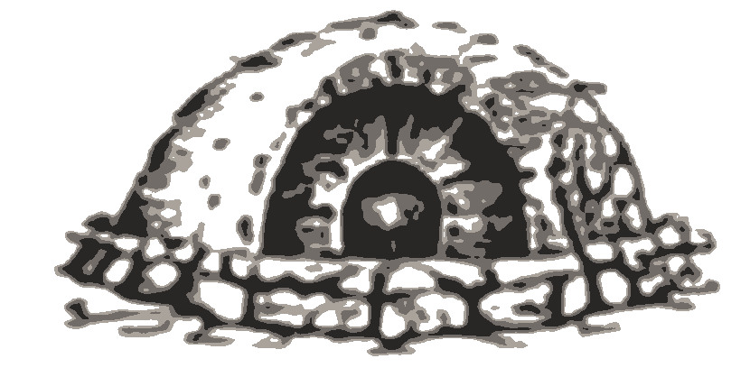
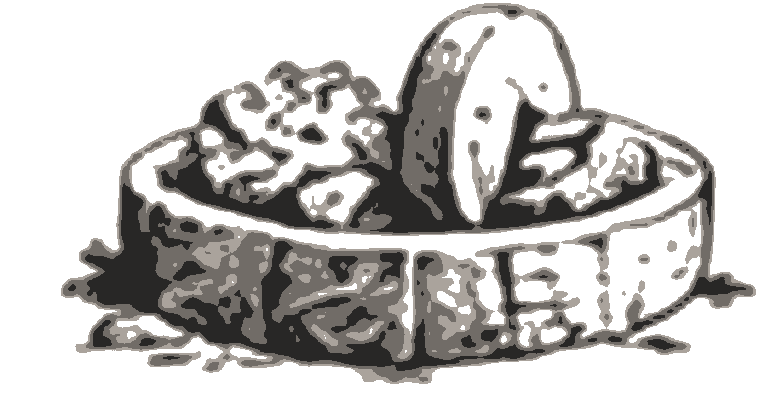
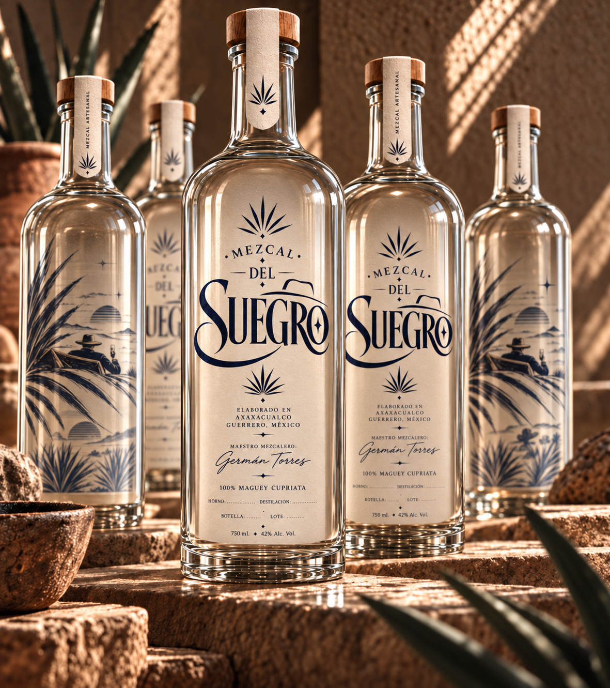

Mezcal artesanal · Guerrero, México
Mezcal del Suegro
Hay quienes toman mezcal
y hay quienes saben disfrutarlo.
Hecho con tiempo,
tierra y paciencia.
Así como lo haría
el suegro.
Origen
De nuestra tierra nacen las grandes historias.
En Axaxacualco, Guerrero, el maguey nos enseña a tener paciencia. Aquí, la tierra, el sol y la tradición dan vida a un mezcal con alma.
Conoce nuestro proceso
Axaxacualco
Guerrero,
México
México
El proceso
El tiempo también es un ingrediente.
De la cocción a la destilación, cada paso respeta el trabajo artesanal y el carácter del maguey.
Proceso artesanal
-

Horno
Artesanal, superficial de barro.
-

Molienda
Con tahona de piedra.
-
Destilación
Alambique de cobre.
Tradición en cada detalle.
Maestro mezcalero
Germán Torres
“Más que mezcal, es un legado.”
Las mejores historias empiezan con un...

El carácter de nuestra tierra, en cada botella.Nuestro mezcal
Un mezcal para compartir historias.
Maguey Cupreata de Axaxacualco, Guerrero. Elaborado de forma artesanal por el maestro mezcalero Germán Torres.
- Origen
- Axaxacualco, Guerrero
- Maguey
- Cupreata
- Presentaciones
- 250 ml · 750 ml
- Disponibilidad
- En botella y a granel
- Maguey Cupreata
- Artesanal
de principio a fin - Axaxacualco
Guerrero, México - Venta a granel
y en botella